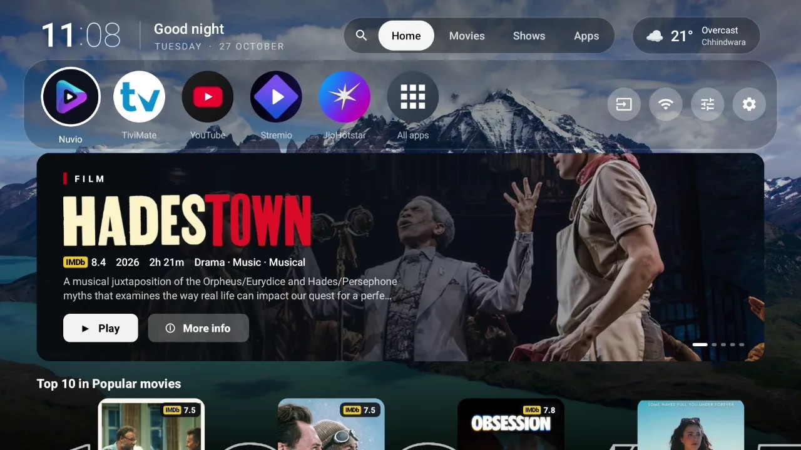

An Android TV launcher made for Nuvio
If you watch through Nuvio, the stock home screen is a detour. Flix Launcher brings Nuvio's Continue watching and your addon rows to the home screen, so Home is one click from your episode.
What Flix adds for Nuvio users
- Continue watching from your Nuvio account, with progress bars, at the top of your film rows.
- Addon rows from any Stremio-compatible addon. Cinemeta's popular films and series are the default.
- One-click playback: OK on a film opens Nuvio's stream list directly; an episode in Continue watching goes straight to its streams.
- Trailers behind the selected title, if you want them.
Set it up
- Download Flix Launcher and install it on the TV.
- Switch on Flix Launcher in Settings → Accessibility so the Home button opens it.
- In Flix, open settings (the last button in the top bar) → Movies & shows → Nuvio account, and scan the QR code with your phone.
- Add your addon rows under Movies & shows, or add them from your phone over the home network.

Which Nuvio builds work
Flix looks for the Play Store Nuvio (com.nuvio.tv), the GitHub builds, and forks such as NuvioPlusIPTV (com.nuvio.livetv). If you use another fork built from Nuvio's code, Flix finds it too.
Flix isn't affiliated with Nuvio. It's a free, open-source launcher that works alongside it.
Questions
Does Flix work with the NuvioPlusIPTV fork?
Yes. Flix finds the Play Store Nuvio, the GitHub builds and forks such as NuvioPlusIPTV automatically.
Do I need a Nuvio account?
Only for Continue watching. Film rows from Cinemeta and your addons work without signing in.
Can I use Stremio addons?
Yes. Any Stremio-compatible addon with catalogues can be added as a home screen row, from the TV or from your phone.